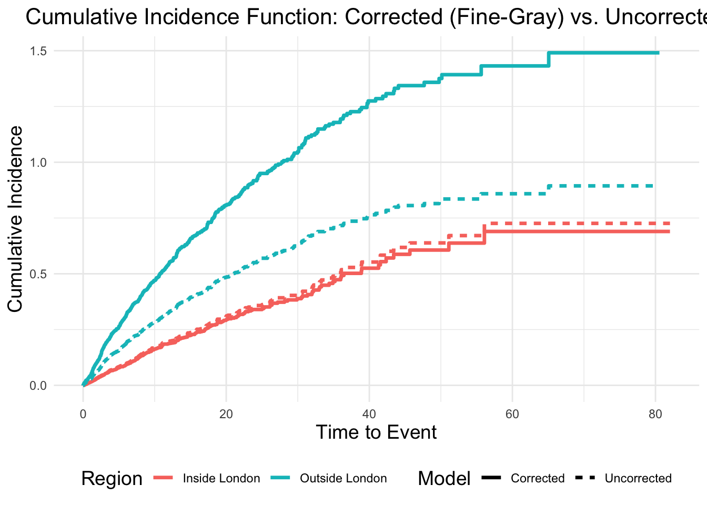

A form of time series analysis, cumulative incidence is useful for outcomes which accumulate in a population of sample. For instance if you were looking at incident cases of disease in two regions (i.e. inside London and outside London) then this is the right type of analysis
To maintain statistical validity whilst correcting for covariates, the following approach is suggested:
Keep the Number at Risk as an Empirical Count:
Retain the original, unadjusted counts of participants at risk over time
Use the Fine-Gray Model for Cumulative Incidence:
Use the Fine-Gray model coefficients to derive adjusted cumulative incidence curves, showing the covariate effects on survival or cumulative incidence.
Visualize Covariate Effects through Model Outputs:
Present the effects of covariates by plotting adjusted survival or cumulative incidence curves.
The following objects are masked from 'package:stats':
filter, lag
The following objects are masked from 'package:base':
intersect, setdiff, setequal, union
library(kableExtra)
Attaching package: 'kableExtra'
The following object is masked from 'package:dplyr':
group_rows
library(cmprsk)
Loading required package: survival
library(ggplot2)library(patchwork)# Modify the creation of the dummy dataset to include 'age' as a significant factorset.seed(1214223)
12.2 Dummy Data
Create a dummy data set with two regions of London, an ‘age’ variable and an event status.
The age will be a significant predictor of the cumulative incidence
The region will be significant predictor of the cumulative incidence
# Number of observationsn <-4000# Create a dummy dataset with group-specific event probabilitiesdummy_data <-tibble(time_to_event =rexp(n, rate =0.1), # Generate random survival timesregion =sample(c("Outside London", "Inside London"), size = n, replace =TRUE),age =rnorm(n, mean =8, sd =10),# Adjust the probability to make both age and region significantly affect the event statusstatus =ifelse(region =="Inside London",rbinom(n, size =1, prob =plogis(-1.5-0.02* age)), # Stronger logistic effect of age for "Inside London"rbinom(n, size =1, prob =plogis(-0.5-0.02* age))) # Weaker logistic effect of age for "Outside London")
The Fine-Grey model is a good multipurpose cumulative incidence model. We’ll give it a matrix of covariates
# Create the Fine-Gray modelfg_model <-crr(ftime = dummy_data$time_to_event, # Time to eventfstatus = dummy_data$status, # Status (event vs censoring)cov1 =model.matrix(~ region + age, data = dummy_data)[, -1] # Covariates (excluding intercept column))
12.3 Summary of the model
Check that both region and age are predictors of cumulative incidence
# Summary of the modelsummary(fg_model)
Competing Risks Regression
Call:
crr(ftime = dummy_data$time_to_event, fstatus = dummy_data$status,
cov1 = model.matrix(~region + age, data = dummy_data)[, -1])
coef exp(coef) se(coef) z p-value
regionOutside London 0.61488 1.849 0.06521 9.43 0.0000
age -0.00947 0.991 0.00315 -3.01 0.0026
exp(coef) exp(-coef) 2.5% 97.5%
regionOutside London 1.849 0.541 1.628 2.102
age 0.991 1.010 0.984 0.997
Num. cases = 4000
Pseudo Log-likelihood = -7527
Pseudo likelihood ratio test = 101 on 2 df,
12.4 Create cumulative incidence data using ‘cuminc’ function for uncorrected cumulative incidence
fit <-cuminc(ftime = dummy_data$time_to_event, fstatus = dummy_data$status, group = dummy_data$region)
12.5 Wrangle the data set
uncorrected_ci_data <-do.call(rbind, lapply(names(fit), function(region_name) {if ("est"%in%names(fit[[region_name]])) {data.frame(time = fit[[region_name]]$time,cuminc = fit[[region_name]]$est,region =gsub(" 1", "", region_name) # Clean the region name ) }}))# Extract coefficients from the Fine-Gray modelcoefficients <-summary(fg_model)$coef# Extract coefficients for "regionOutside London" and "age"outside_london_coef <- coefficients["regionOutside London", "coef"]age_coef <- coefficients["age", "coef"]# Calculate the average age in the datasetmean_age <-mean(dummy_data$age)# Extract the coefficients vector from the Fine-Gray modelcoef_vector <- coefficients[, "coef"]# Create the design matrix for the covariates (excluding intercept)covariate_matrix <-model.matrix(~ region + age, data = dummy_data)[, -1] # Adjust as needed for additional covariates# Calculate the linear predictor for each observation# This is the dot product of the covariate values and the corresponding coefficientslinear_predictor <- covariate_matrix %*% coef_vector
12.6 Use the uncorrected cumulative incidence as a baseline and adjust for the effect of all covariates
# corrected_ci_data <- uncorrected_ci_data %>%mutate(# Apply the linear predictor to calculate the corrected cumulative incidencecorrected_cuminc = cuminc *exp(linear_predictor[match(region, dummy_data$region)]),# Calculate standard errors for confidence intervalsse_cuminc =sqrt(diag(fg_model$var)[1]) # Simplified extraction of standard error for illustration purposes ) %>%mutate(ci_upper = corrected_cuminc +1.96* se_cuminc,ci_lower = corrected_cuminc -1.96* se_cuminc,type ="Corrected" )# Add a new column to indicate whether the data is corrected or uncorrecteduncorrected_ci_data <- uncorrected_ci_data %>%mutate(type ="Uncorrected")corrected_ci_data <- corrected_ci_data %>%mutate(type ="Corrected")# Combine both corrected and uncorrected datacombined_ci_data <-bind_rows( uncorrected_ci_data %>%rename(cif = cuminc), corrected_ci_data %>%rename(cif = corrected_cuminc))
13 Plot both the corrected (Fine-Gray) and uncorrected cumulative incidence curves for both groups
ggplot(combined_ci_data, aes(x = time, y = cif, color = region, linetype = type)) +geom_line(size =1.2) +# Labels and stylinglabs(title ="Cumulative Incidence Function: Corrected (Fine-Gray) vs. Uncorrected",x ="Time to Event",y ="Cumulative Incidence",color ="Region",linetype ="Model" ) +theme_minimal() +theme(plot.title =element_text(hjust =0.5, size =16),axis.title =element_text(size =14),legend.title =element_text(size =14),legend.position ="bottom" )
Warning: Using `size` aesthetic for lines was deprecated in ggplot2 3.4.0.
ℹ Please use `linewidth` instead.

13.1 Plot corrected cumulative incidence curves with confidence intervals
cuminc_plot_corrected <-ggplot(corrected_ci_data, aes(x = time, y = corrected_cuminc, color = region)) +geom_ribbon(aes(x = time, ymin = ci_lower, ymax = ci_upper, fill = region), alpha =0.2) +geom_line(size =1.2) +# Labels and stylinglabs(title ="Cumulative Incidence Function: Corrected (Fine-Gray)",x ="Time to Event",y ="Cumulative Incidence" ) +theme_minimal() +theme(plot.title =element_text(hjust =0.5, size =16),axis.title =element_text(size =14),legend.title =element_text(size =14),legend.position ="bottom" )# Calculate the number at risk for the unadjusted risk tabletime_intervals <-seq(0, max(dummy_data$time_to_event), by =10) # Set time intervals (e.g., every 10 units)risk_data <-lapply(time_intervals, function(t) { dummy_data %>%filter(time_to_event >= t) %>%group_by(region) %>%summarise(at_risk =n(), .groups ='drop') %>%mutate(time = t)}) %>%bind_rows()# Plot the risk table with unadjusted number at riskrisk_table_plot <-ggplot(risk_data, aes(x = time, y = region, label = at_risk)) +geom_text(size =3) +labs(x ="Time to Event",y ="Region",title ="Number at Risk" ) +theme_minimal() +theme(plot.title =element_text(hjust =0.5, size =14),axis.title.y =element_blank(),axis.text.y =element_text(size =10),panel.grid.major =element_blank(), # Remove grid lines for claritypanel.grid.minor =element_blank() )# Combine the corrected cumulative incidence plot and unadjusted risk table using patchworkcuminc_plot_corrected / risk_table_plot +plot_layout(heights =c(3, 1))